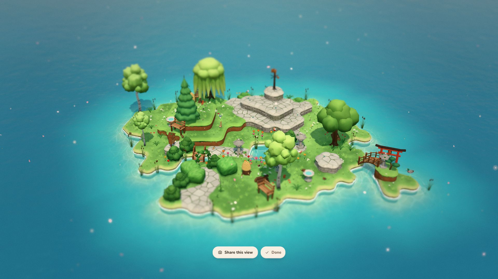
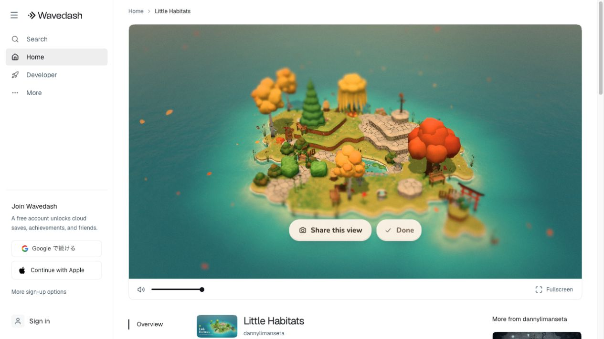
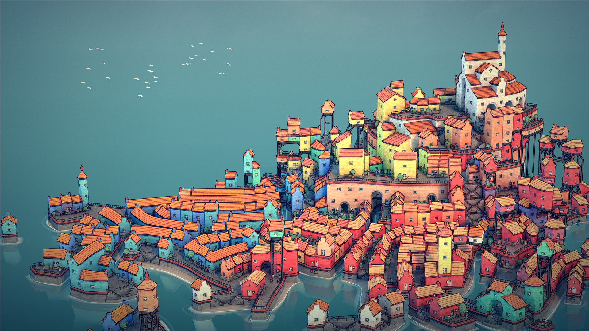
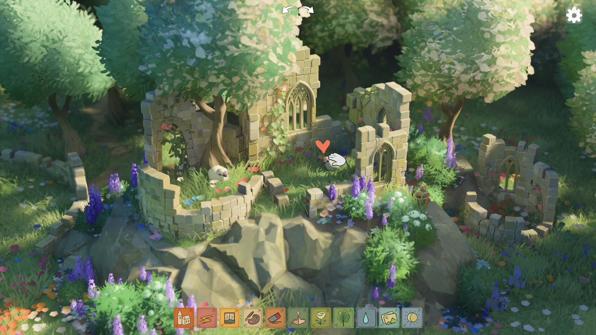
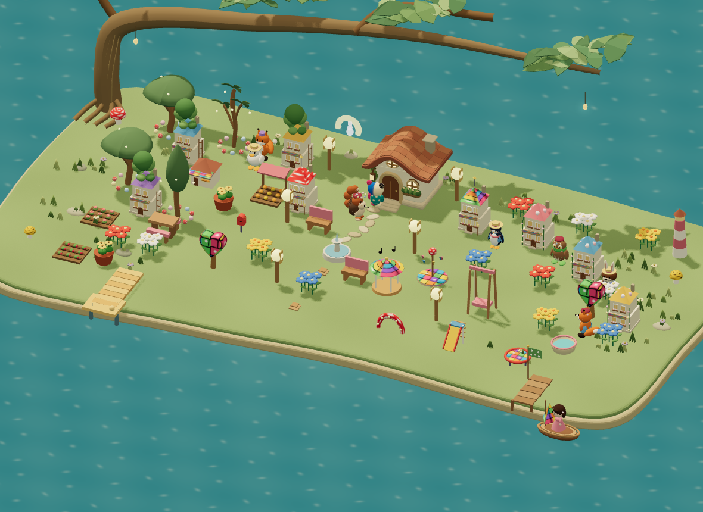
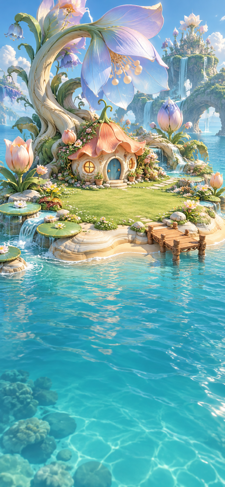

形が応える
置く・動かす・分けると、根、枝、岸、足元が適応する。配置中から結果の予告が見える。
即時 / 新しい待機時計を足さない島全体の美術比較：全島3方向×初期/発展途中/成熟を見る → 生成美術・未選定。原画を選んでから実装の基準を固定します。
DESIGN STRATEGY & REFERENCE SHOWCASE
明るく丸い島で。
つながりから、大きな不思議を。
同じ材料でも、置き方から別の島が育つ。土地・水辺・植物・集落・不思議を一体で設計し、最初の明るい3Dの愛着を保持する。今後の改修を、同じ参考と判断基準で積み重ねるための場所です。

借りるのは、場所のつながりと立体のまとまり。
今後の制作方針と比較資料です。具体の数値・最終造形・新しいゲーム挙動の採用や配信は、実物の比較と検証を経て決めます。
ROOT / CONSTRUCTION × ART
品数と見た目を別々に改善する制作から、土地・水辺・植物・集落・不思議を、一つの成長する世界として設計する制作へ。
THE DESIGN DECISION
隣へ置いた瞬間に形が応える。時間とともに大きな姿へ育つ。そこを住人が使う。そして、組み合わせからその場所だけの不思議が生まれる。
置く・動かす・分けると、根、枝、岸、足元が適応する。配置中から結果の予告が見える。
即時 / 新しい待機時計を足さない個体の成熟と家の成長が、樹冠、地面、広場の大きな変化になる。住人が同じ場所を使う。
既存のしぜん・まちの時計木陰、庭、水辺、暮らしの異なる役割がつながり、場所固有の大形や出会いへ。
普通の成長は確定的 / 珍しい出会いは別置き方の意味を説明する模式図。最終造形・個数条件・性能の証拠ではありません。次の試作は同じ材料・成熟・画角を固定し、最低3つの造形方向で比較します。
丸い岸、岬、入り江、厚み。既存の床を守り、新しい地区から地形契約を見直す。
実通水と歩ける場所から、岸と道を作る。子どもに道を一本ずつ引かせない。
根・樹冠・花の面が育つ。密度が高いだけの配置を唯一の正解にしない。
個々の家を残し、共有の足元・広場・実際の往来が育つ。同じ人口でも違う街へ。
大きな葉が屋根になり、幹が空間を囲む。昼の形に幻想があり、短い現象が重なる。

LITTLE HABITATS / LH-06公式説明：土地の形からランドマーク、三つからWonderと祭り。画像はサンプル庭で、成長過程の実測ではない。

TOWNSCAPER / TS-03公式説明：ブロックの配置から家・アーチ・階段・橋・庭へ。借りるのは、隣との関係を形にする原理。

TINY GLADE / TG-02公式説明：道に扉、高さに柱や梁が適応する。木・土・家が接する場所まで魅力を作る。
SimCity 2013からは、道路・地区・周辺条件から建物が成長する原理を借ります。税金・維持費・退去は移しません。公式マニュアル ↗
00 / GROW PLACES, CHANGE THE WORLD
次の一つを「どこに置くか」で、木陰、水辺、庭、街の姿が変わる。成長の見返りを、景色全体で見せる。

これまでの改善は、丸さ・素材・光に寄りすぎていました。必要なのは、隣のものとの関係から、今までなかった大きな景色が育つこと。
置く → つなげる → 場所が育つ → 暮らしが変わる。
元の木や家の所有と履歴は続く。置き直すくふうも、育った場所の愛着も残します。
離れている：三本の木は、それぞれの木陰を持つ。
成長の差を説明する模式図です。新しい3D候補や実装画面ではありません。具体の個数・隣接条件・時間・効果は未採用。
根・枝・樹冠・地面が育つ。木陰そのものが、大きな居場所になる。
水の縁が一つの曲線へ。水が届く場所と、訪れる岸が変わる。
点が色の面へ。花と通路が休憩場所を囲み、庭として育つ。
足元と屋根のまとまりが変わる。個々の家と入口、実際の暮らしを残す。
Little Habitats：形からランドマークが生まれ、三つがWonderと祭りになる。公式説明 ↗
SimCity 2013：道路・地区・密度や価値に応じて、建物の姿が成長する。公式マニュアル ↗
共通して借りるのは、配置と周囲の条件から景色が変わる原理。上の四系列はSansuへの翻訳案です。成長・接続・所有の設計案を読む ↗
01 / ONE COHERENT WORLD
「明るい」「かわいい」「幻想的」を、それぞれ満たす。灯りを消した昼の一枚にも、入りたくなる不思議があること。

澄んだ海、ふっくらした岸、小さな色瓦の家。既存の布のぽこもこを、この世界の主役に。
岸の出入り、低い段、水辺、木と生活物のまとまり。自分が育てた景色に奥行きを。

大きな自然と小さな暮らしの尺度。昼の形で伝わる幻想へ。生成絵は実3Dの証拠とは分ける。
岸・水・木・屋根を一体で決める。非日常の主形は一つ。細部は後から。
土はふくらみ、木は曲線、家は厚い面、水は薄い透明。布は既存のまま。
明るい空と水を土台に、青・コーラル・黄を暮らしへ。全素材を虹色にしない。
木・土・布・瓦・陶器・水を描き分ける。通常画角では、模様より面を優先。
日常の形、小さな反応、特別な出会い。原因と反応が同じ場所で見える。
取得した物と実際の往来で豊かに。人口や所有物を美術のために偽らない。
世界の制作に使う仮の色見本。製品UIは現行のデザインシステムに従い、照明後の画面で確かめます。
#70CEE7丸い岸#EEE1C4草の明るい面#BFDAA7青い瓦#7DA8DFコーラル#EE9C98小さな暖色#F1D37A02 / ANNOTATED REFERENCE LIBRARY
各画像に、観察・取り入れる点・避ける点・次の確認を添えました。拡大して見て、二枚を並べ、判断を残せます。
外部実画面 / 公式紹介 / 自作・利用者提供実画面 / 生成参考を区別して表示
この条件の画像はありません。テーマや検索を変えてください。
03 / ITERATE WITH EVIDENCE
世界全体の方針を先に決め、コードは一系列から検証する。配置、成熟、実際の利用、水と地形、複数の場所を順に確かめます。
構築と美術を一体化。現行の1マス・矩形土地・単体描画の問題、32枚の参考、判断と責任を整理。
同じ木・成熟で、離す/列/塊/中庭を比較。最低3つの造形方向から、複数の良い置き方を選ぶ。
接続→成熟→実住人が使う。390/768・昼夜・少ない/途中/成熟。規則と所有、保存も一致。
実通水を水辺の場所へ。新しい地区から非矩形のセル・床高・岸を、歩行・橋・旧保存と一緒に設計。
森・水辺・庭と家・食卓・遊びがつながる。同じ人口でも、環境と共有空間が違う街区へ。
場所固有の不思議と、入口から帰島まで。実機・独立観察・旧保存/offline/PWAで三ゲートを確認。
明るさ、尺度、素材、奥行き、固有性。初期のかわいさと選んだ基準を実画面で比較。
新候補は未評価5人中4人が同じ行為と見返りを読める。作者の説明を聞いた人は独立観察に数えない。
未実施操作、配置、学習、保存、性能、両幅、PWA。技術PASSを美術採用に置き換えない。
新しいゲーム変更なし候補ID・参照ID・対象build・実画面・判断理由・次に直す一点を残す。二回届かなければ、大形・構図・描画方法から見直す。
SOURCES & SCOPE
Little Habitats / dannylimanseta — 公式サンプル庭の9場面。季節ジャンプ・時刻スキップ・停止・写真モードを使用。祭り・精霊・通常の獲得過程・実機性能はこの記録の範囲外。
Tiny Glade / Pounce Light と Townscaper / Oskar Stålberg・Raw Fury — 公式掲載画像を各4枚。造形と素材の補助参考。実際の操作・通常の密度・性能の証拠ではありません。
Sansuの10枚は保存済み実画面、U-01は利用者提供の現状画像。日付と候補が異なる診断資料です。生成参考4枚は未選定。外部素材は内部比較用で、ゲームに組み込む素材とは分けます。